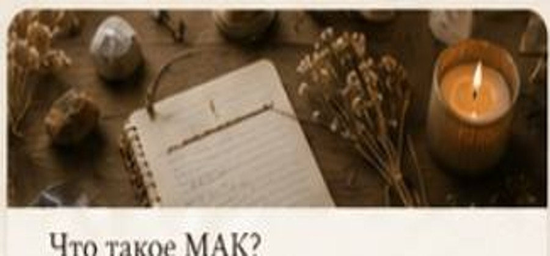
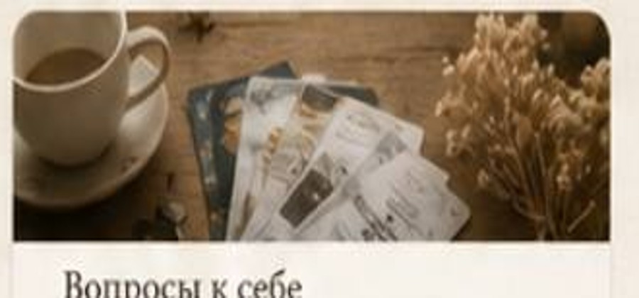
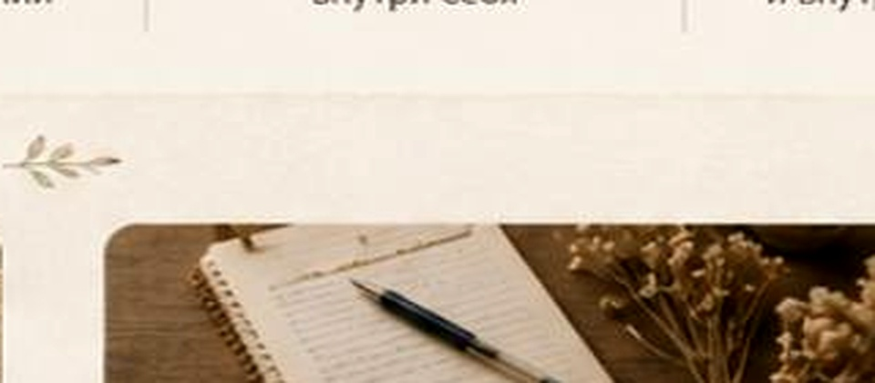

Щоденник
Невеликі статті про емоції, самопізнання, стосунки та роботу з метафоричними асоціативними картами.

21 червня 2026
Запитання до себе
Практики усвідомленості та маленькі кроки до важливих змін.
Читати далі
12 червня 2026
Психологія щодня
Як помічати свій стан, краще чути себе й дбати про внутрішній світ.
Читати далі